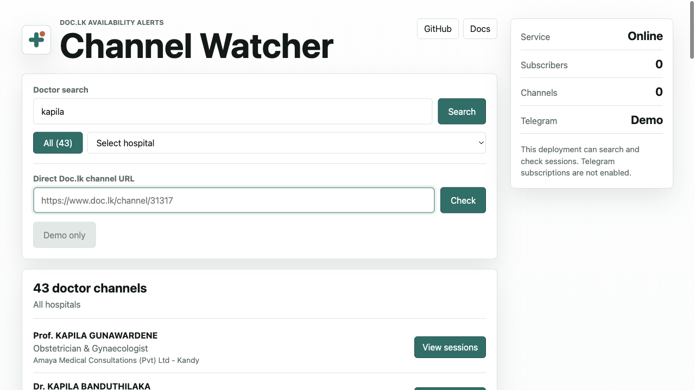
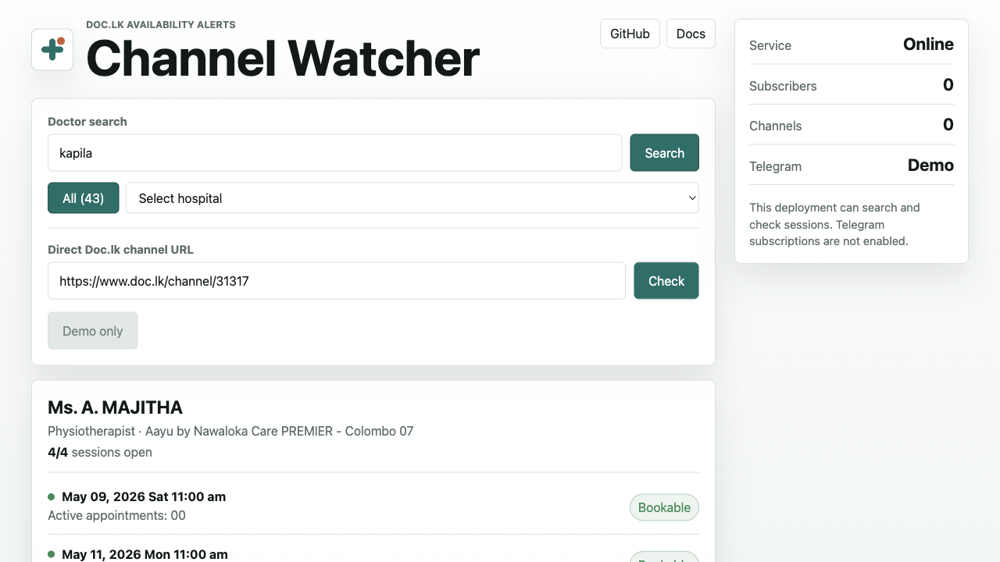

Find a channel
Search a doctor or paste a direct Doc.lk channel URL.
Search doctors, filter by hospital, check channel sessions, and run Telegram alerts when a bookable appointment appears.


The project page on GitHub is static. The real checker runs on Node.js because it has to call Doc.lk routes and manage Telegram subscription state.
Search a doctor or paste a direct Doc.lk channel URL.
The parser treats a session as open only when the booking button is usable.
The monitor sends Telegram alerts for newly open bookable sessions.
This is the safest public preview mode. It allows search and session checks, while Telegram subscriptions stay disabled until you configure a bot token on a backend server.
git clone https://github.com/VihangaDev/doclk-channel-watcher.git
cd doclk-channel-watcher
npm install
PORT=3000 TELEGRAM_BOT_TOKEN= TELEGRAM_POLLING=false npm run web